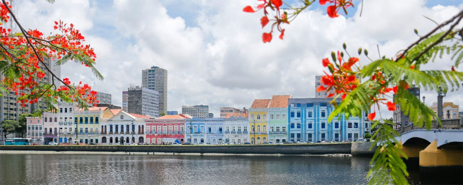

Pontos turísticos de Recife
Rua do bom Jesus
Considerada uma das ruas mais bonitas do mundo, a rua do bom Jesus é uma rua do centro do Recife.
Caracterizada pela beleza de suas cores, suas palmeiras, a rua do bom Jesus é famosa por seus bares e sua boemia.

Rua da Aurora
Construída às margens do rio Capibaribe, principal rio que corta a cidade,
a rua da Aurora é sem dúvidas uma mais ruas mais bonitas da capital pernambucana.